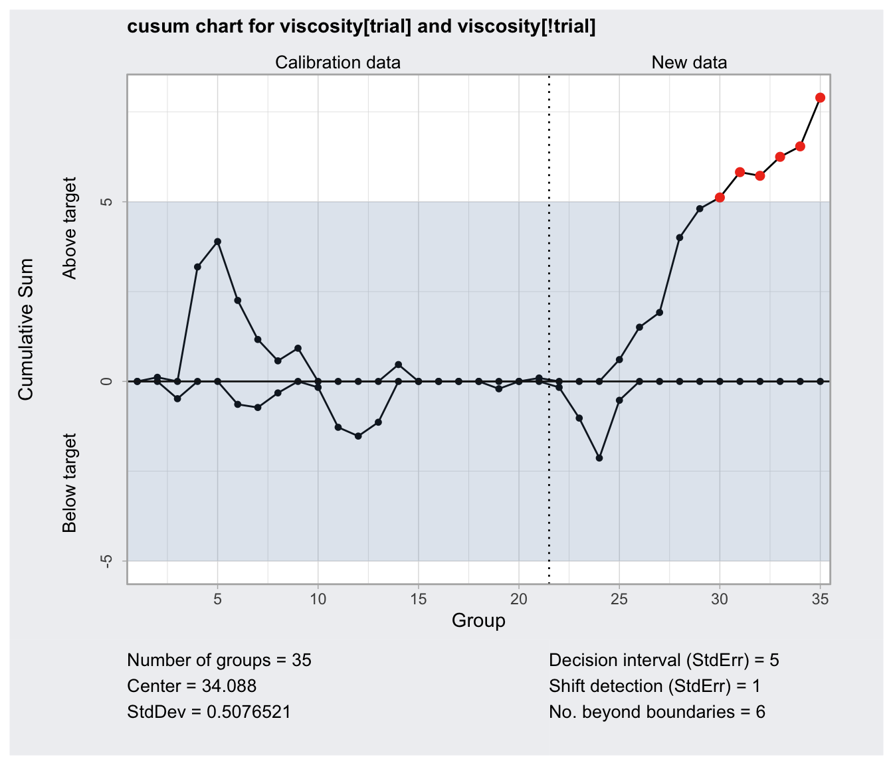
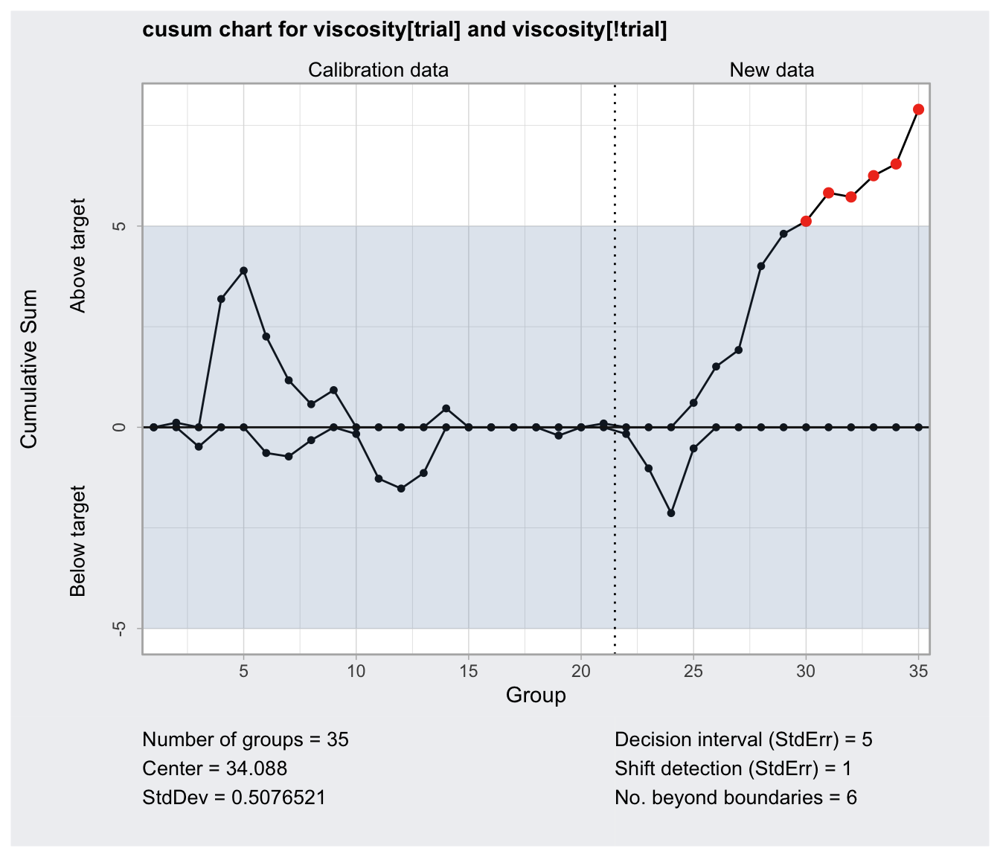

Cusum chart
cusum.RdCreate an object of class 'cusum.qcc' to compute a Cusum chart for statistical quality control.
Usage
cusum(data, sizes, center, std.dev,
decision.interval = 5, se.shift = 1,
head.start = 0,
newdata, newsizes, ...)
# S3 method for class 'cusum.qcc'
print(x, digits = getOption("digits"), ...)
# S3 method for class 'cusum.qcc'
plot(x,
xtime = NULL,
add.stats = qcc.options("add.stats"),
chart.all = qcc.options("chart.all"),
fill = qcc.options("fill"),
label.bounds = c("LDB", "UDB"),
title, xlab, ylab, xlim, ylim,
digits = getOption("digits"), ...)Arguments
- data
a data frame, a matrix or a vector containing observed data for the variable to chart. Each row of a data frame or a matrix, and each value of a vector, refers to a sample or ”rationale group”.
- sizes
a value or a vector of values specifying the sample sizes associated with each group. If not provided the sample sizes are obtained counting the non-
NAelements of each row of a data frame or a matrix; sample sizes are set all equal to one ifdatais a vector.- center
a value specifying the center of group statistics or the ”target” value of the process.
- std.dev
a value or an available method specifying the within-group standard deviation(s) of the process.
Several methods are available for estimating the standard deviation. Seesd.xbarandsd.xbar.onefor, respectively, the grouped data case and the individual observations case.- decision.interval
A numeric value specifying the number of standard errors of the summary statistics at which the cumulative sum is out of control.
- se.shift
The amount of shift to detect in the process, measured in standard errors of the summary statistics.
- head.start
The initializing value for the above-target and below-target cumulative sums, measured in standard errors of the summary statistics. Use zero for the traditional Cusum chart, or a positive value less than the
decision.intervalfor a Fast Initial Response.- newdata
a data frame, matrix or vector, as for the
dataargument, providing further data to plot but not included in the computations.- newsizes
a vector as for the
sizesargument providing further data sizes to plot but not included in the computations.- xtime
a vector of date-time values as returned by
Sys.timeandSys.Date. If provided it is used for x-axis so it must be of the same length as the statistic charted.- add.stats
a logical value indicating whether statistics and other information should be printed at the bottom of the chart.
- chart.all
a logical value indicating whether both statistics for
dataand fornewdata(if given) should be plotted.- fill
a logical value specifying if the in-control area should be filled with the color specified in
qcc.options("zones")$fill.- label.bounds
a character vector specifying the labels for the the decision interval boundaries.
- title
a character string specifying the main title. Set
title = NULLto remove the title.- xlab, ylab
a string giving the label for the x-axis and the y-axis.
- xlim, ylim
a numeric vector specifying the limits for the x-axis and the y-axis.
- digits
the number of significant digits to use.
- x
an object of class
'cusum.qcc'.- ...
additional arguments to be passed to the generic function.
Details
Cusum charts display how the group summary statistics deviate above or below the process center or target value, relative to the standard errors of the summary statistics. Useful to detect small and permanent variation on the mean of the process.
References
Mason, R.L. and Young, J.C. (2002) Multivariate Statistical Process Control with Industrial Applications, SIAM.
Montgomery, D.C. (2013) Introduction to Statistical Quality Control, 7th ed. New York: John Wiley & Sons.
Ryan, T. P. (2011), Statistical Methods for Quality Improvement, 3rd ed. New York: John Wiley & Sons, Inc.
Scrucca, L. (2004). qcc: an R package for quality control charting and statistical process control. R News 4/1, 11-17.
Wetherill, G.B. and Brown, D.W. (1991) Statistical Process Control. New York: Chapman & Hall.
Examples
##
## Grouped-data
##
data(pistonrings)
diameter = qccGroups(data = pistonrings, diameter, sample)
q = cusum(diameter[1:25,], decision.interval = 4, se.shift = 1)
summary(q)
#> ── Cusum Chart ───────────────────────────────────
#>
#> Data (phase I) = diameter[1:25, ]
#> Number of groups = 25
#> Group sample size = 5
#> Center of group statistics = 74.00118
#> Standard deviation = 0.009785039
#>
#> Decision interval (StdErr) = 4
#> Shift detection (StdErr) = 1
plot(q)
 q = cusum(diameter[1:25,], newdata=diameter[26:40,])
summary(q)
#> ── Cusum Chart ───────────────────────────────────
#>
#> Data (phase I) = diameter[1:25, ]
#> Number of groups = 25
#> Group sample size = 5
#> Center of group statistics = 74.00118
#> Standard deviation = 0.009785039
#>
#> New data (phase II) = diameter[26:40, ]
#> Number of groups = 15
#> Group sample size = 5
#>
#> Decision interval (StdErr) = 5
#> Shift detection (StdErr) = 1
plot(q, chart.all=FALSE)
q = cusum(diameter[1:25,], newdata=diameter[26:40,])
summary(q)
#> ── Cusum Chart ───────────────────────────────────
#>
#> Data (phase I) = diameter[1:25, ]
#> Number of groups = 25
#> Group sample size = 5
#> Center of group statistics = 74.00118
#> Standard deviation = 0.009785039
#>
#> New data (phase II) = diameter[26:40, ]
#> Number of groups = 15
#> Group sample size = 5
#>
#> Decision interval (StdErr) = 5
#> Shift detection (StdErr) = 1
plot(q, chart.all=FALSE)
 ##
## Individual observations
##
data(viscosity)
q = with(viscosity, cusum(viscosity[trial], newdata = viscosity[!trial]))
summary(q)
#> ── Cusum Chart ───────────────────────────────────
#>
#> Data (phase I) = viscosity[trial]
#> Number of groups = 20
#> Group sample size = 1
#> Center of group statistics = 34.088
#> Standard deviation = 0.5076521
#>
#> New data (phase II) = viscosity[!trial]
#> Number of groups = 15
#> Group sample size = 1
#>
#> Decision interval (StdErr) = 5
#> Shift detection (StdErr) = 1
plot(q)

##
## Individual observations
##
data(viscosity)
q = with(viscosity, cusum(viscosity[trial], newdata = viscosity[!trial]))
summary(q)
#> ── Cusum Chart ───────────────────────────────────
#>
#> Data (phase I) = viscosity[trial]
#> Number of groups = 20
#> Group sample size = 1
#> Center of group statistics = 34.088
#> Standard deviation = 0.5076521
#>
#> New data (phase II) = viscosity[!trial]
#> Number of groups = 15
#> Group sample size = 1
#>
#> Decision interval (StdErr) = 5
#> Shift detection (StdErr) = 1
plot(q)
